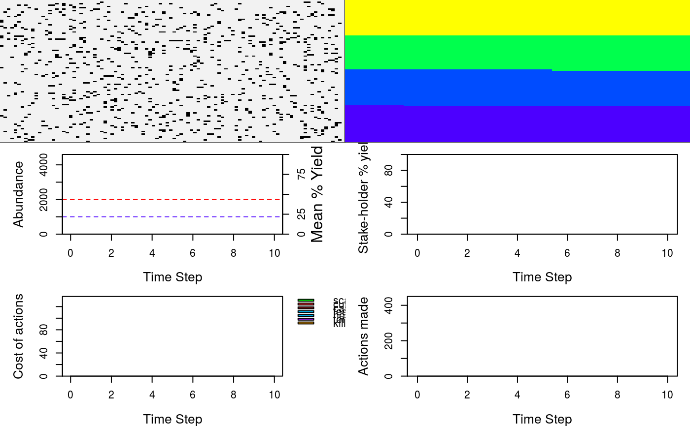
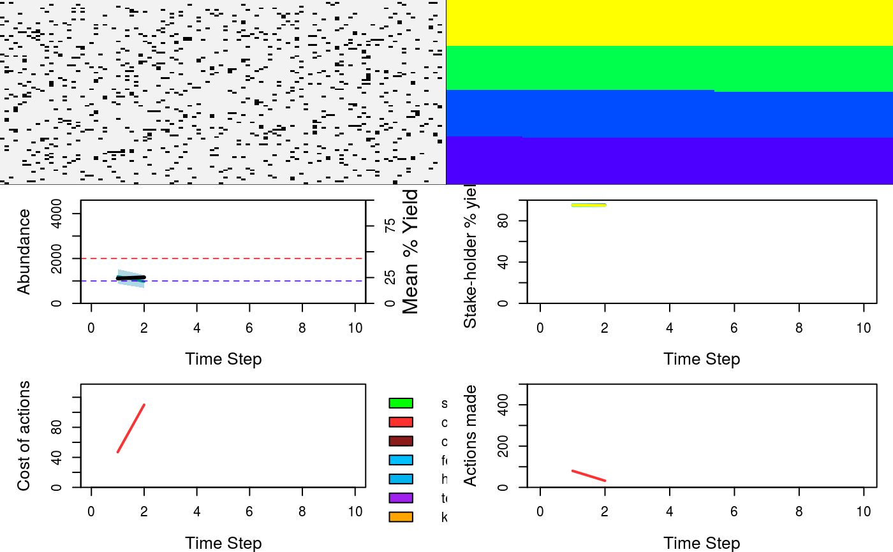
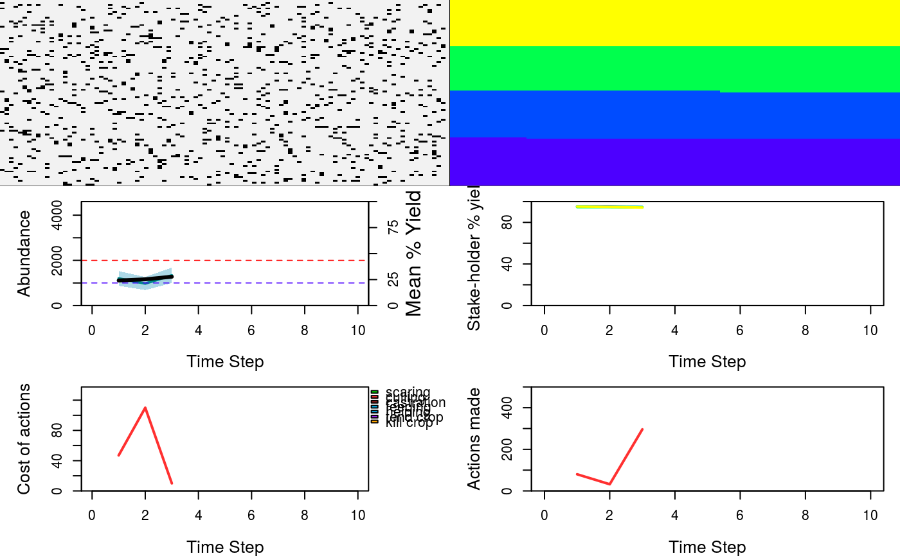
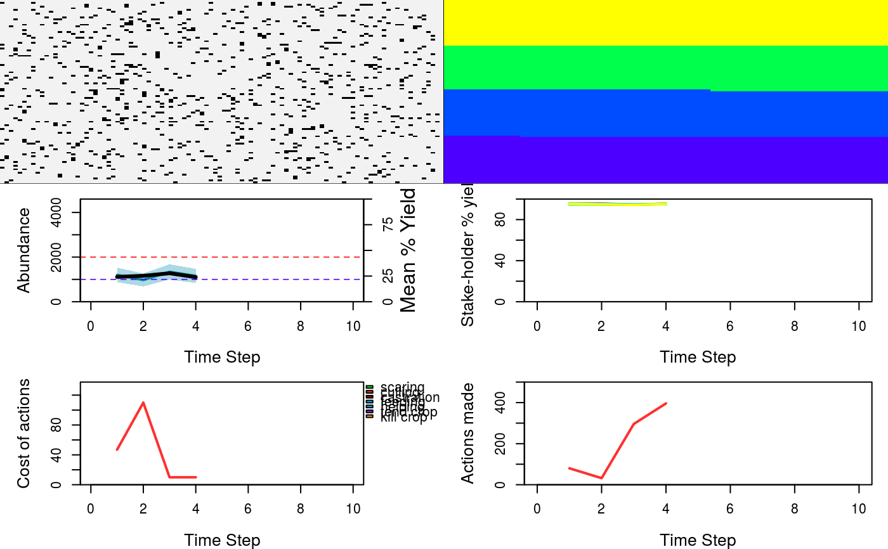
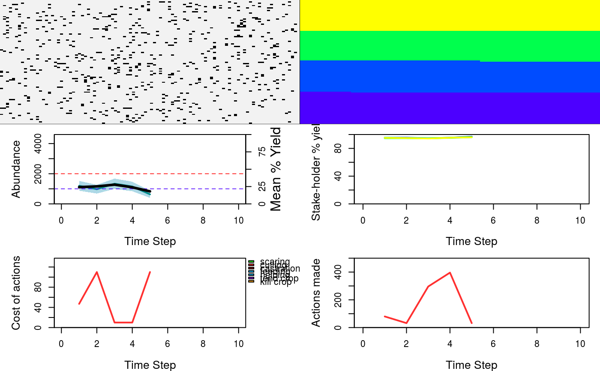
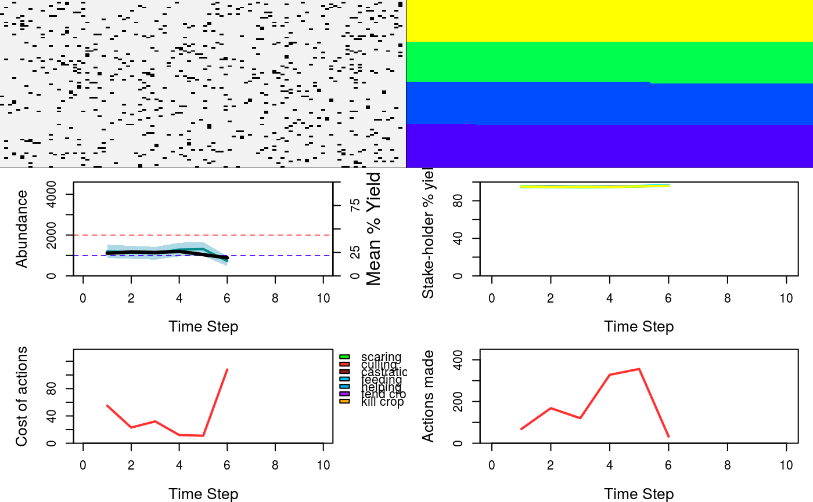
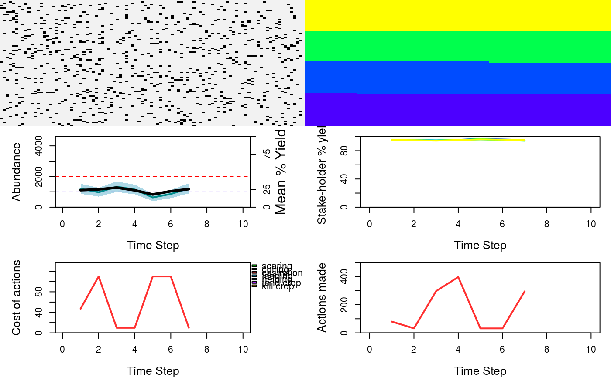
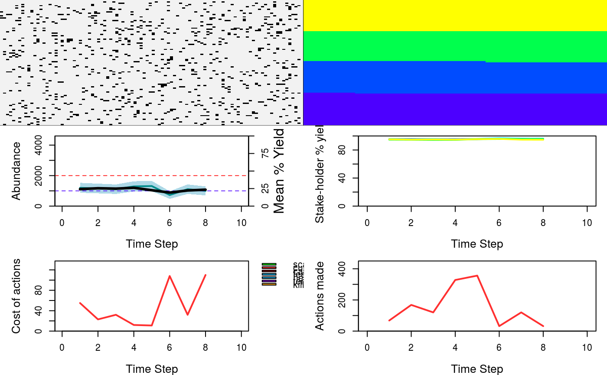
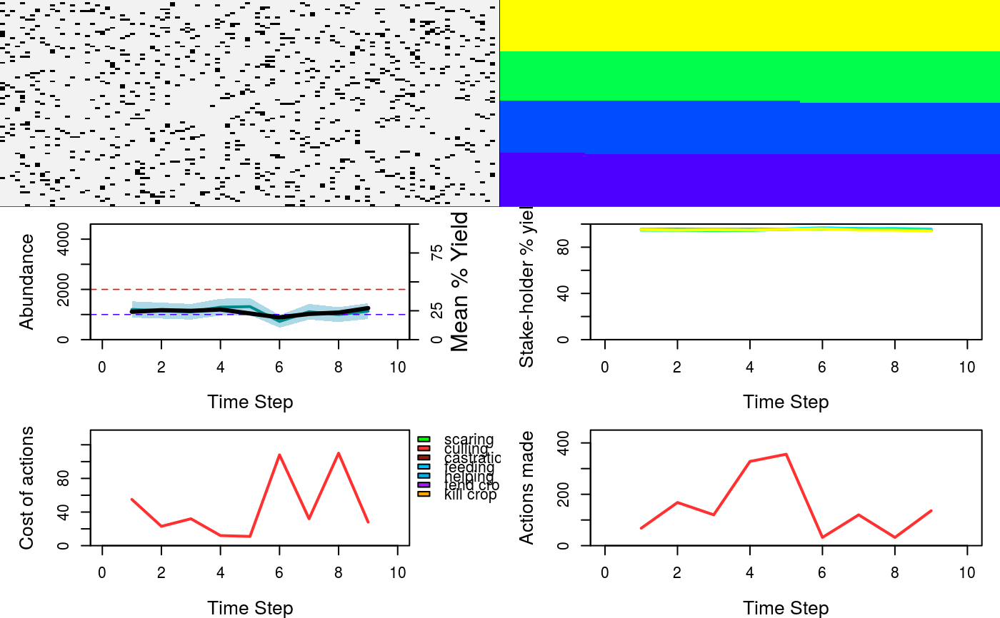

gmse.RdThe gmse function is the the primary function to call to run a simulation. It calls other functions that run resource, observation, management, and user models in each time step. Hence while individual models can be used on their own, gmse() is really all that is needed to run a simulation.
gmse(time_max = 100, land_dim_1 = 100, land_dim_2 = 100, res_movement = 20, remove_pr = 0, lambda = 0.3, agent_view = 10, agent_move = 50, res_birth_K = 1e+05, res_death_K = 2000, edge_effect = 1, res_move_type = 1, res_birth_type = 2, res_death_type = 2, observe_type = 0, fixed_mark = 100, fixed_recapt = 500, times_observe = 1, obs_move_type = 1, res_min_age = 0, res_move_obs = TRUE, Euclidean_dist = FALSE, plotting = TRUE, hunt = FALSE, start_hunting = 95, res_consume = 0.5, ga_popsize = 100, ga_mingen = 40, ga_seedrep = 20, ga_sampleK = 20, ga_chooseK = 2, ga_mutation = 0.1, ga_crossover = 0.1, move_agents = TRUE, max_ages = 5, minimum_cost = 10, user_budget = 1000, manager_budget = 1000, manage_target = 1000, RESOURCE_ini = 1000, scaring = FALSE, culling = TRUE, castration = FALSE, feeding = FALSE, help_offspring = FALSE, tend_crops = FALSE, tend_crop_yld = 0.2, kill_crops = FALSE, stakeholders = 4, manage_caution = 1, land_ownership = FALSE, manage_freq = 1, converge_crit = 0.1, manager_sense = 0.9, public_land = 0, group_think = FALSE)
| time_max | This value sets the maximum number of time steps for a simulation. There are no constraints for length of time that a simulation can run. The default is 100 time steps. |
|---|---|
| land_dim_1 | This value sets the number of cells on the x dimension of the landscape (i.e., the number of columns in the landscape array; this can also be thought of as the x-axis when the landscape image is plotted). There is no maximum, but the minimum dimension of a landscape is 2 cells. The default is 100 cells. |
| land_dim_2 | This value sets the number of cells on the y dimension of the landscape (i.e., the number of columns in the landscape array; this can also be thought of as the y-axis when the landscape image is plotted). There is no maximum, but the minimum dimension of a landscape is 2 cells. The default is 100 cells. |
| res_movement | This value determines how far resources move during a time step. Exact movement is probabilistic and partly affected by `res_move_type` settings. Under default settings, during each time step, resources move from zero to res_movement cells away from their starting cell in any direction. Hence res_movement is the maximum distance away from a resources starting cell that it can move in a time step; other types of resource movement, however, interpret res_movement differently to get the raw distance moved (see res_move_type). The default value is 20. |
| remove_pr | This value is the density-independent and user-independent probability of a resource being removed (e.g., dying) during a time step in the resource model. Under default settings, this value is set to zero, with resource removal being determined entirely by carrying capcity on resource survival, and by user actions. |
| lambda | This value is the baseline population growth rate of resources. Each resource in the simulation produces Poisson(lambda) offspring in one time step within the resource model. The value of lambda might be increased or decreased by user actions, and juvenile survival can potentially be decreased by a carrying capacity placed on birth. The default value is 0.3, meaning that the average resource produces one offspring every three time steps. |
| agent_view | This value determines how far agents (managers and stakeholders) can see on the landscape. At the moment, this affects only the sampling ability of managers in the observation model for density-based and transect-based estimates of resource abundance. In these types of estimates, when managers have a higher agent_view, they are capable of observing a larger area of landscape and therefore of getting a larger (in the case of density-based estimation) or more efficient (in the case of transect-based estimation) sample of resources from which to estimate total resource abundance. The default value of agent_view is 10, so agents can see 10 cells away from their current cell in any direction. |
| agent_move | This value determines how far agents can move. At the moment, this does not affect much in the simulation because agent movement does not affect agent actions (interactions with resources can be limited to stakeholder's owned land, but do not currently depend on where an agent is on the landscape -- effectively assuming that agents are mobile enough to do what they want to do to resources). The one exception is for density-based estimation, which can be biased by low values of agent_move by causing the manager to sample the same (or nearby) landscape cells to estimate total resource abundance; if resources are spatially autocorrelated, then managers might over or under-estimate total abundance. Therefore, as a default, this value is set to 50 so that managers can move to any cell on a (torus) landscape in a time step, removing any bias for density sampling. |
| res_birth_K | This value is the carrying capacity on new resources added per time step (e.g., birth). If more offspring are born in a time step than res_birth_K, then offspring are randomly removed from the population until offspring born equals res_birth_K. By default, carrying capacity is effectively applied to death instead of birth, so the default value of res_birth_K is set to 100000 (and hence not enacted because the number of births is never this high). |
| res_death_K | This value is the carrying capacity on resources in the population. Carrying capacity is realised by an increase in mortality probability as resource abundance approaches res_death_K. In each time step, realised mortality probability equals the number of resources over carrying capacity divided by the number of resources (i.e., [resource count - carrying capacity] / resource count). Hence, as the resource abundance increases above carrying capcity, mortality probability also increases in proportion, generating some stochasticity in resource survival. Note that carrying capacity is independent of user actions; if a user culls a resource this culling is applied after mortality probability due to carrying capacity has already been calculated. The default value for res_death_K is 2000. |
| edge_effect | This determines what happens at the edge of the landscape. Currently there is only one option (value 1), which causes the landscape to wrap around as a torus (effectively removing the edge); resources that leave off of one side of the landscape will reappear on the other side of the landscape. |
| res_move_type | This determines the type of movement that resources do. There are four different movement options: (0) No movement -- resources are sessile, (1) Uniform movement in any direction up to `res_movement` cells away during a time step. Movement direction is random and the cell distance moved is randomly selected from zero to `res_movement`. (2) Poisson selected movement in the x and y dimensions where distance in each direction is determined by Poisson(res_movement) and direction (e.g., left versus right) is randomly selected for each dimension. This type of movement tends to look a bit odd with low `res_movement` values because it results in very little diagonal movement. It also is not especially biologically realistic, so should probably not be used without a good reason. (3) Uniform movement in any direction up to `res_movement` cells away during a a time step `res_movement` times. In other words, the `res_movement` variable of each resource is acting to determine the times that a resource moves in a time step and the maximum distance it travels each time it moves. This type of movement has been simulated in ecological models, particularly plant-pollinator systems. The default movement type is (1). |
| res_birth_type | The type of resource addition (birth) that occurs. Currently, the only value allowed is 2, which causes all resources to produce Poisson(lambda) offspring each time step, where `lambda` is the population growth rate also set as an argument in gmse simulations. |
| res_death_type | The type of resource removal (death) that occurs. A value of (1) causes death to be entirely density-independent and with a probability of `removal_pr` for each resource (which may be further affected by agent actions or interactions with landscape cells). A value of (2) causes death to be entirely density-dependent (though potentially independently affected by agents and landscape), with mortality probability calculated based on the carrying capacity `res_death_K` set in as an argument in gmse simulations. A value of (3) allows for both density-dependent (affected by `res_death_K`) and density-independent (affected by `removal_pr`) effects on resource removal. The default `res_death_type` is (2); values of (1) must be used carefully because it can result in exponential growth that leads to massive population sizes that slow down simulations. |
| observe_type | The type of observation sampling of resources being done by managers in the observation model. There are currently four options for sampling. (0) Density-based sampling, in which managers sample all resources within some subset of the landscape; the size of this subset is all of the resources within a distance of `agent_view` from the cell of the manager. Managers sample `times_observe` subsets, where `times_observe` is a parameter value set in the gmse simulation. Managers then extrapolate the density of resources in the subset to estimate the total number of resources on a landscape. (1) Mark-recapture estimate of the popuation, in which managers randomly sample `times_observe` resources in the population without any spatial bias (if there are fewer than `times_observe` resources, managers sample all resources) `times_observe` times with replacement. The first `fixed_observe` times are interpreted as marks, while the remaining times are interpreted as recaptures (note that `fixed_observe` must be less than `times_observe`). Hence if a resource is observed at any time in `fixed_observe` independent observations, then it is considered marked; if it is observed again at any time in `times_observe - fixed_observe` independent observations, then it is considered recaptured. A Chapman estimate is used in the manager model to estimate population size from these observation data. (2) Transect-based sampling (linear), in which a manager samples an entire row of the landscape and counts the resources on the row, then moves onto the next row of the landscape until the entire landscape has been covered. The number of cells in each row (i.e., the height) equals `agent_view`, so fewer transects are needed if agents can see farther. If `res_move_obs == TRUE`, then resources can move on the landscape between each transect sampling, potentially causing observation error if some resources are double counted or not counted at all due to movement. If `res_move_obs == FALSE`, then this type of observation should produce no error, and resource estimation will be exact. (3) Transect-based sampling (block), in which a manager samples a block of the landscape and counts the resources in the block, then moves on to the next (equally sized) block until the entire landscape has been covered. Blocks are square, with the length of each side equaling `agent_view`, so fewer blocks are needed if agents can see farther. If `res_move_obs == TRUE`, then resources can move on the landscape between each block sampling, potentially causing observation error if some resources are double counted or not counted at all due to movement. If `res_move_obs == FALSE`, then this type of observation should produce no error, and resource estimation will be exact. The default observation type is 0 for density-based sampling. |
| fixed_mark | This parameter affects mark-recapture observation (i.e., applies only when observe_type == 1). Its value defines how many resources will be marked in each time step as part of a mark-recapture population size estimate. |
| fixed_recapt | This parameter affects mark-recapture observation (i.e., applies only when observe_type == 1). Its value defines how many resources will be (re)captured in each time step as part of a mark-recapture population size estimate. |
| times_observe | This parameter defines how many times a manager will make observations within the observation model; it applies only to density-based sampling (`observe_type = 0`) and mark-recapture sampling (`observe_type = 1`). In the former case, the value determines how many times the manager goes out to sample resources from a subset of the landscape. In the latter case, the value determines how many times the manager goes out to attempt to find new resources to mark or recapture (hence its value must be greater than `fixed_observe`). |
| obs_move_type | This determines the type of movement that agents do. The four different movement types of agents are identical to those of resources: : (0) No movement -- agents are sessile, (1) Uniform movement in any direction up to `agent_move` cells away during a time step. Movement direction is random and the cell distance moved is randomly selected from zero to `agent_move`. (2) Poisson selected movement in the x and y dimensions where distance in each direction is determined by Poisson(agent_move) and direction (e.g., left versus right) is randomly selected for each dimension. This type of movement tends to look a bit odd with low `agent_move` values because it results in very little diagonal movement. It also is not especially realistic, so should probably not be used without a good reason. (3) Uniform movement in any direction up to `agent_move` cells away during a a time step `agent_move` times. In other words, the `agent_move` variable of each agent is acting to determine the times that an agent moves in a time step and the maximum distance it travels each time it moves. This type of movement has been simulated in ecological models, particularly plant-pollinator systems. The default movement type is (1). |
| res_min_age | This value defines the minimum age at which resources are recorded and acted upon by agents; below this age, resources are ignored. The default value of this parameter is 0. Note that the population might appear to go over carrying capacity regularly because carrying capacity is not realised until the next resource model if it applies to the death of resource (this is not a problem for the simulation itself, it just needs to be noted). If the value is set to 1, then offspring just produced during a time step (age = 0) are not observed or acted upon by agents. |
| res_move_obs | This is a TRUE or FALSE value that defines whether or not resources are to move between `times_observe` times being observed. The default value is TRUE, but if the option is set to FALSE then it shuts down all resource movement during sampling (making `observe_type = 2` and `observe_type = 3` error free). |
| Euclidean_dist | This is a TRUE or FALSE value that defines whether distance in the simulation should be judged as number of cells away or the actual Euclidean distance between points (e.g., if the landscape were interpreted as a map). The default is set to FALSE, and until GMSE is capable of reading in real-world maps, I don't think there is any good reason to set it to TRUE. |
| plotting | This is a TRUE or FALSE value that determines whether or not the simulation results will be plotted. The default is TRUE. If plotted, then a function is called to show the dynamics of resources and agent actinos over time. The plotted function plots the dynamics of GMSE resource, observation, managemer, and user models in six separate sub-panels. (1) Upper left panel: Shows the locations of resources on the landscape (black dots); landscape terrain is also shown in brown, but at the moment, this is only cosmetic and does not reflect anything occurring in the model. (2) Upper right panel: Shows ownership of land by agents; land is divided proportional based on parameters set in gmse() and colours correspond with other subplots. If agent utilities and actions are restricted to land (`land_ownership` in the gmse() function), then this gives some idea of where actions are being performed and where resources are affecting the landscape. (3) Middle left panel: Shows the actual population abundance (black solid line) and the population abundance estimated by the manager (blue solid line) over time. The dotted red line shows the resource carrying capacity (death-based) and the dotted blue line shows the target for resource abundance as set in the gmse() function; the orange line shows the total percent yield of the landscape (i.e., 100 percent means that resources have not decreased yield at all, 0 percent means that resources have completely destroyed all yield). (4) Middle right panel: Shows the raw landscape yield for each stakeholder (can be ignored if `land_ownership` is FALSE) over time; colours correspond to land ownership shown in the upper right panel. (5) Lower left panel: The cost of stakeholders performing actions over time, as set by the manager. (6) Lower right panel: The total number of actions performed by all stakeholders over time. |
| hunt | This is a TRUE or FALSE value that determines whether the simulation will be halted each time step after `start_hunting` time steps to ask the user how many resources they want to hunt (some management information is given to help make this choice). This feature will be expanded upon in later versions. Right now, the human is playing the role of agent number 2, the first stake-holder in the simulation. By default, this value is set to FALSE. |
| start_hunting | The time step in which the human (*not* the simulated agent) is allowed to start hunting if `hunt = TRUE`. The default value is 95. |
| res_consume | The fraction of remaining biomass (e.g. crop production) that a resource consumes while occupying a landscape cell. The default value is 0.5, so if one resource occupies the cell, then landscape production is halved, if two resources occupy the cell, then landscape production drops to 0.25; if three, then production drops to 0.125, etc. |
| ga_popsize | The size of populations of agents in the genetic algorithm (not resources in the simulation). The actions of each agent in the simulation are duplicated `ga_popsize` times, and this population of individual agent actions undergoes a process of natural selection to find an adaptive strategy. Selection is naturally stronger in larger populations, but a default population size of 100 is more than sufficient to find adaptive strategies. |
| ga_mingen | The minimum number of generations in the genetic algorithms of the simulation (*not* the number of time steps in the simulation itself). The actions of each agent in the simulation are duplicated `ga_popsize` times, and this population of individual agent actions undergoes a process of natural selection at least `ga_mingen` times to find an adaptive strategy. If convergence criteria `converge_crit` is set to a default value of 100, then the genetic algorithm will almost always continue for exactly `ga_mingen` generations. The default value is 40, which is usually plenty for finding adaptive agent strategies -- the objective is not to find optimal strategies, but strategies that are strongly in line with agent interests. |
| ga_seedrep | At the start of each genetic algorithm, `ga_popsize` replicate agents are produced; `ga_seedrep` of these replicates are *exact* replicates, while the rest have random actions to introduce variation into the population. Because adaptive agent strategies are not likely to change wildly from one generation to the next, it is highly recommended to use some value of `ga_seedrep` greater than zero; the default value is 20, which does a good job of finding adaptive strategies. |
| ga_sampleK | In the genetic algorithm, fitnesses are assigned to different agent strategies and compete in a tournament to be selected into the next generation. The tournament samples `ga_sampleK` strategies at random and with replacement from the population of `ga_popsize` to be included in the tournament. The default value is 20. |
| ga_chooseK | In the genetic algorithm, fitnesses are assigned to different agent strategies and compete in a tournament to be selected into the next generation. The tournament samples `ga_sampleK` strategies at random and with replacement from the population of `ga_popsize` to be included in the tournament, and from these randomly selected strategies, the top `ga_chooseK` strategies are selected. The default value is 2, so the top 10 percent of the random sample in a tournament makes it into the next generation (note that multiple tournaments are run until `ga_popsize` strategies are selected for the next generation). |
| ga_mutation | In the genetic algorithm, this is the mutation rate of any action within an agent's strategy. When a mutation occurs, the action is either increased or decreased by a value of 1. If the action drops below zero, then the value after mutation is multiplied by -1. |
| ga_crossover | In the genetic algorithm, this is the crossover rate of any action within an agent's strategy with a randomly selected different strategy in the population of size `ga_popsize`. |
| move_agents | This is a TRUE or FALSE value that defines whether or not agents should move at the end of each time step. The default value is TRUE. |
| max_ages | This is the maximum age of resources. If resources reach this age, then they are removed in the resource model with a probability of 1. The default `max_ages` is 5. |
| minimum_cost | This is the mimimum cost of any action in the manager and user models. Higher values allow managers to have greater precision when setting policy. For example, managers believe (typically correctly) that they will double culling number by setting the cost of culling at 1 instead of 2. If actions always cost at least some minium value, then some increment just above that value is always available to more precisely affect user actions. Hence it is generally better to simply give everyone a bigger budget and set a minimum cost, giving more precision to managers to fine tune policy. The default value of minimum_cost is therefore set to 10. |
| user_budget | This is the total budget of each stakeholder for performing actions. The cost of performing an action is determined by the `miminimum_cost` of actions, and the policy set by the manager. The default `user_budget` is 1000. The maximum budget is 100000. |
| manager_budget | This is the total budget for the manager when setting policy. Higher budgets make it easier to restrict the actions of stakeholders; lower budgets make it more difficult for managers to limit the actions of stakeholders by setting policy. The default `manager_budget` is 1000. The maximum budget is 10000. |
| manage_target | This is the target resource abundance that the manager attempts to keep the population at; the default value is 1000. |
| RESOURCE_ini | This is the initial abundance of resources at the start of the simulation; the default is 1000. |
| scaring | This is a TRUE or FALSE value determining whether or not scaring is an option for managers and stakeholders. If so, then stakeholders that scare cause resources to be moved from their current landscape cell to a random cell on the landscape (note, it is possible that the resource could be scared back onto the stakeholder's own land again). The default value of this is FALSE. |
| culling | This is a TRUE or FALSE value determining whether or not culling is an option for managers and stakeholders. If so, then stakeholders that cull cause the resource to be removed from the simulation permanently (i.e., killing the resource). The default value of this is TRUE. |
| castration | This is a TRUE or FALSE value determining whether or not castration is an option for managers and stakeholders. If so, then stakeholders that castrate do not remove the resource from the simulation, but prohibit the resource from reproducing by setting its `lambda` value to zero. The default value of this is FALSE. |
| feeding | This is a TRUE or FALSE value determining whether or not feeding is an option for managers and stakeholders. If so, then stakeholders that feed increase a resource's growth rate (lambda) for one time step by 100 percent. The default value of this is FALSE. |
| help_offspring | This is a TRUE or FALSE value determining whether or not feeding is an option for managers and stakeholders. If so, then stakeholders that help_offspring increase a resource's offspring production for one time step by one (i.e., one more offspring is produced). The default value of this is FALSE. |
| tend_crops | This is a TRUE or FALSE value determining whether or not tending crops on the landscape is allowed for stakeholders. If so, then stakeholders can increase one cells yield by 50 percent for each action to `tend_crops`. Actions on the landscape cannot be regulated by managers, so the cost of this action is always `minimum_cost`. The default value of this is FALSE. |
| tend_crop_yld | The per landscape cell proportional increase in crop yield when stakeholders take one action to increase yield on their landscape. The default value is set to 0.5 (i.e., a 50 percent increase in yield on a cell). |
| kill_crops | This is a TRUE or FALSE value determining whether or not killing crops on the landscape is allowed for stakeholders. If so, then stakeholders can remove the crop yield on a cell completely for each action to `kill_crops`. Actions on the landscape cannot be regulated by managers, so the cost of this action is always `minimum_cost`. |
| stakeholders | This is the number of stakeholders in a simulation; there is always one manager, plus any natural number of stakeholders. |
| manage_caution | This value moderates the caution a manager has when changing policy by assuming that at least `manage_caution` of each possible action will always be performed by stakeholders. I manager will therefore not ignore policy for one action because no stakeholder is engaging in it; the default value of `manage_caution` is 1. |
| land_ownership | This value defines whether stakeholders own land and their actions are restricted to land that they own. If FALSE, then stakeholders can act on any landscape cell; if TRUE, then agents can only act on their own cells. The default of this value is FALSE. |
| manage_freq | This is the frequency with which policy is set by managers; a value of 1 means that policy is set in the manager model every time step; a value of 2 means that poilcy is set in the manager model every other time step, etc. The default value is 1. |
| converge_crit | This is the convergence criteria for terminating a genetic algorithm. After continuing for the minimum number of generations, `ga_mingen`, the genetic algorithm will terminate if the convergence criteria is met. Usually making this criteria low doesn't do much to improve adaptive strategies; the default value is 1, which means that the genetic algorithm will continue as long as there is greater than a 1 percent increase in strategy fitness. |
| manager_sense | This adjusts the sensitivity that a manager assumes their actions have with respect to changes in costs (their policy). For example, given a `manage_sense` value of 0.9, if the cost of culling resources doubles, then instead of a manager assuming the the number of culled resources per user will be cut in half, the manager will instead assume that the number of resources culled will be cut by one half times eight tenths. As a general rule, a value of ca 0.8 allows the manager to predict stake-holder responses to policy accurately; future versions of GMSE could allow managers to adjust this dynamically based on simulation history. |
| public_land | The proportion of the landscape that will be public, and not owned by stakeholders. The remaining proportion of the landscape will be evenly divided among stakeholders. Note that this option is only available when land_ownership == TRUE. |
| group_think | If TRUE, all users will have identical actions; the genetic algorithm will find actions for one user and copy them for all users. This is a useful option if a lot of users are required but variation among user decisions can be ignored. |
A large list is returned that includes detailed simulation histories for the resource, observation, management, and user models. This list includes eight elements, most of which are themselves complex lists of arrays: (1) A list of length `time_max` in which each element is an array of resources as they exist at the end of each time step. Resource arrays include all resources and their attributes (e.g., locations, growth rates, offspring, how they are affected by stakeholders, etc.). (2) A list of length `time_max` in which each element is an array of resource observations from the observation model. Observation arrays are similar to resource arrays, except that they can have a smaller number of rows if not all resources are observed, and they have additional columns that show the history of each resource being observed over the course of `times_observe` observations in the observation model. (3) A 2D array showing parameter values at each time step (unique rows); most of these values are static but some (e.g., resource number) change over time steps. (4) A list of length `time_max` in which each element is an array of the landscape that identifies proportion of crop production per cell. This allows for looking at where crop production is increased or decreased over time steps as a consequence of resource and stakeholder actions. (5) The total time the simulation took to run (not counting plotting time). (6) A 2D array of agents and their traits. (7) A list of length `time_max` in which each element is a 3D array of the costs of performing each action for managers and stakeholders (each agent gets its own array layer with an identical number of rows and columns); the change in costs of particular actions can therefore be be examined over time. (8) A list of length `time_max` in which each element is a 3D array of the actions performed by managers and stakeholders (each agent gets its own array layer with an identical number of rows and columns); the change in actions of agents can therefore be examined over time. Because the above lists cannot possibly be interpreted by eye all at once in the simulation output, it is highly recommended that the contents of a simulation be stored and interprted individually if need be; alternativley, simulations can more easily be interpreted through plots when `plotting = TRUE`.
sim <- gmse(lambda = 0.3, land_ownership = TRUE, time_max = 10);#> [1] "Initialising simulations ... "